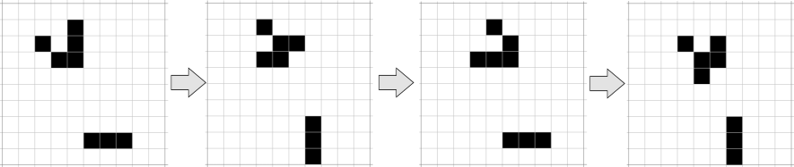

To understand the context of this problem, read the class #10 exercise sheet. After the deadline the problem stays open on Mooshak, but submissions no longer count towards your grade.
In this problem you should read from the standard input using functions such as input() and you should write to the standard output using functions such as print()
(you are expected to read the class instructions, that will help you build a solution with structured programming and incremental development)
After everything he has been through, Will Byers has grown unusually perceptive about patterns, especially those that resemble the eerie shifts he can sense in the Upside Down. He has stumbled upon the Game of Life, a two-dimensional cellular automaton created by John Conway. Its cycles of emergence, collapse, and rebirth immediately catch his attention, reminding him of the strange rhythms he feels. Hoping to study and understand these dynamics more closely, Will decides to simulate the automaton and he needs your help.
In the game of life, a grid of cells evolves over time based on a few simple rules. Will wants to see how an initial grid changes over multiple generations.
In the grid, each cell can be empty or be occupied by an organism. Occupied cells are said to be alive and unoccupied cells are said to be dead. In each generation, the cells that are alive change their state depending on the number of neighbouring cells that are alive according to the following rules:
The following figures illustrate an initial configuration of the game of life and the three consecutive generations that follow from it .

Write a program that, given an initial configuration and a number K indicating the number of generations to simulate, produces and prints all the K generations.
The first line contains three positive integers: the number of rows R and columns C that determine the size of the grid and the number of iterations K it must perform.
This is followed by R lines of C characters representing the initial state of the game. Dead cells are represented by '.' and live cells by '#'.
You must print the K generations that follow the initial configuration.
Each generation should start by having a line with an integer indicating the generation number and then R rows, each with C characters representing the game grid with the dead cells marked with '.' and the live cells with '#'.
The following limits are guaranteed in all the test cases that will be given to your program:
| 0 ≤ R,C ≤ 50 | dimensions of the grid |
| 1 ≤ K ≤ 50 | number of generations |
Example Input
10 10 3 .......... ....#..... ..#.#..... ...##..... .......... .......... .......... .......... .....###.. ..........
Example Output
1 .......... ...#...... ....##.... ...##..... .......... .......... .......... ......#... ......#... ......#... 2 .......... ....#..... .....#.... ...###.... .......... .......... .......... .......... .....###.. .......... 3 .......... .......... ...#.#.... ....##.... ....#..... .......... .......... ......#... ......#... ......#...